Teljes útmutató a JW Time használatához
JW Time 4.1.1: letisztultabb Zoom-megosztás, megbízhatóbb médiakezelés és stabilabb lejátszás.
Az első indításkor a JW Time egy varázslót jelenít meg, amely összegyűjti az alapvető beállításokat az alkalmazás megnyitása előtt. Ez a javasolt útvonal egy új telepítéshez, mert így elkerülhető, hogy azonnal meg kell keresni az egyes opciókat a beállítási paneleken.
A varázsló végén megnyithatja a JW Time fájlt, és csak a fejlettebb beállításokat végezheti el, mint például a média, a webszerver, a felvételek és a biztonsági mentés.
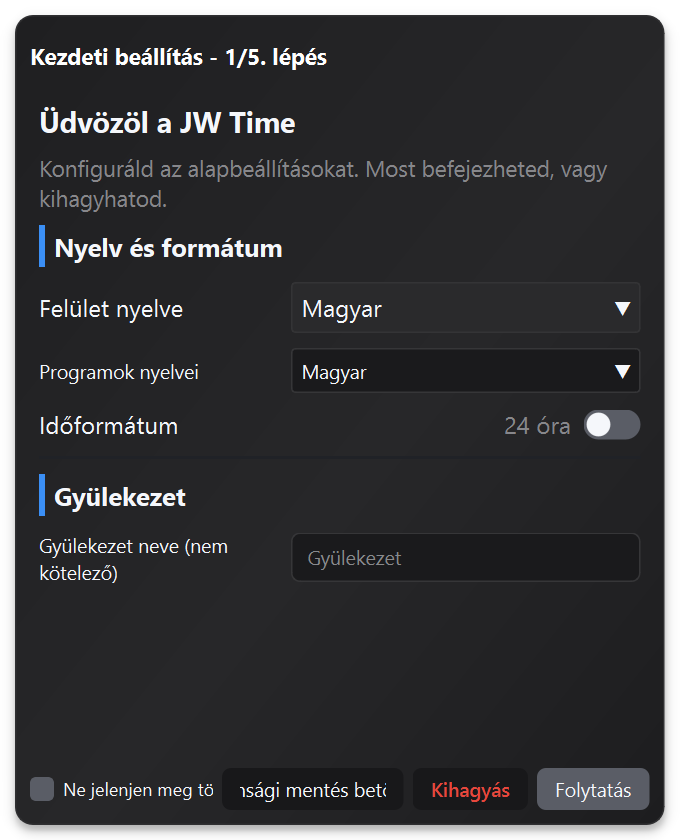
Ha bezárja vagy kihagyja a varázslót, manuálisan konfigurálhatja a lényeget a Beállításokban és a főablakban. Ez az ellenőrző lista gyors ellenőrzésként is szolgál az összejövetel előtt.
Ugrás ide 9. szakasz · Általános nyelv és időformátum esetén, majd a 10. szakasz · Gyülekezetek , ha profilt kell létrehoznia vagy ki kell választania. Ellenőrizze, hogy a betöltött ütemterv megfelel-e a kívánt hétnek és nyelvnek.
Be 12. szakasz · Képernyő válassza ki a megfelelő monitorokat, és aktiválja a használni kívánt ablakokat. Az Időzítő képernyő megjelenésének megváltoztatásához lásd: 5.3 szakasz · Az Időzítő képernyő testreszabása.
Nyissa meg a 4. szakasz · Médiaablak a hét dalainak, videóinak és képeinek megtekintéséhez. A gyorsítótár, a minőség és a háttérbeállítások megtalálhatók a 13. szakasz · Média.
A főablak segítségével indíthatja el az időzítőket, küldhet üzeneteket az Időzítő képernyőnak, és nyissa meg a REC panelt. Haz összejöveteleket rögzít, ellenőrizze az első opciókat 16. szakasz · Felvételek.
Ha távoli vezérlést, QR vagy böngészőből való megtekintést használ, konfigurálja a 15. szakasz · Kapcsolat és szerver. Hálózat nélküli munkavégzéshez vagy konfigurációk átviteléhez ellenőrizze a 17. szakasz · Offline csomagok és biztonsági mentések.
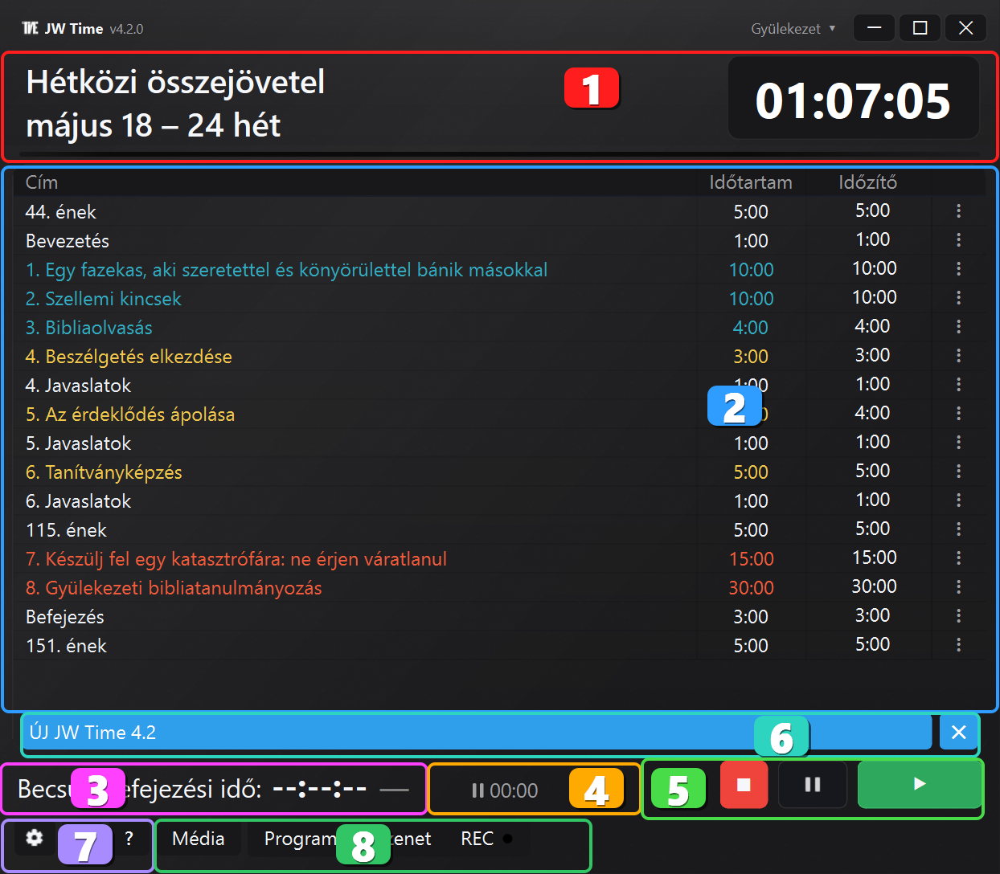
A fő képernyő az alkalmazás szíve. Innen elindíthatja, kezelheti és figyelheti az összes összejövetel-időzítőt, megtekintheti a legfontosabb információkat, például az aktuális rész címét, az órát és a hátralévő időt, valamint ellenőrizheti a fontos üzeneteket és értesítéseket.
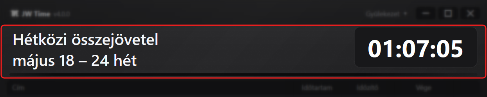
A felső sorban az éppen folyamatban lévő rész címe, alatta pedig az óra alatt az aktuális idővel, illetve időzítő indításakor a hátralévő idő visszaszámlálása látható. A 12 órás formátumban az AM/PM utótag kisebb méretben is megjelenik az olvashatóság javítása érdekében.
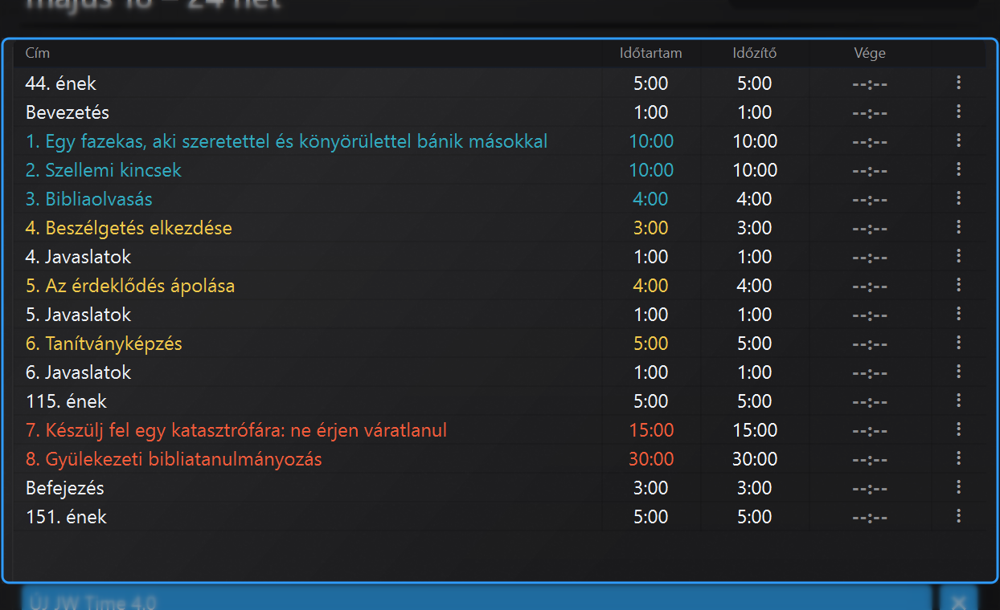
Felsorolja az összejövetel napirendjét (cím, időtartam, állapot). A tartalom a kiválasztott nap alapján automatikusan betöltődik: az alkalmazás felismeri, hogy hétközi vagy hétvégi összejövetelről van-e szó, és a megfelelő ütemtervet javasolja. A gombok és műveletek részletes leírását lásd 3. szakasz · Időzítők kezelése.
Ha aktív Befejezés oszlop megjelenítése az általános beállításoknál a táblázat azt is mutatja, hogy az aktuális és az azt követő részek mikor érnek véget. Ez nem egy rögzített ütemterv szerinti idő: ez egy valós időben frissített előrejelzés az aktuális idő, a hátralévő időzítők és az esetleges felhalmozott eltérések alapján.
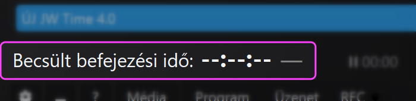
Az ütemterv szerinti várható zárási időt mutatja. Megjelenik mellette eltérés:
+m:ss (sárga 1'-en belül, piros azon túl) = késés
−m:ss (zöld) = előrelépés
Az idő és az indikátor valós időben frissül. Ha az adaptív bibliatanulmányozás és/vagy az adaptív Őrtorony-tanulmány aktív, az időtartamokat a rendszer újraszámolja, hogy beleférjenek a befejezési időbe.
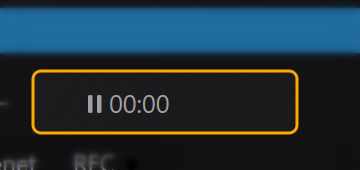
Kumulatív számláló óó:pp:pp technikai szünetek/előadóváltás: hozzáadja az időzítő szüneteltetésének idejét. A szünet alatt a részidőzítő leállítva marad, miközben ez a számláló nő. Az indikátorra kattintva visszaállítja a végösszeget.
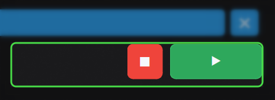
Vezérlők az időzítők indításához, leállításához és kezeléséhez: Stop (piros), Szünet és Indítás/Következő (zöld). A Szünet gomb szünetelteti a részidőzítőt (a számlálás leállítva marad), miközben a szünet/előadóváltás ideje tovább növekszik. A szünetből való kilépéshez nyomja meg ismét a Szünet gombot, vagy lépjen a következő részre a Start/Next gombbal: a felhalmozott időt rögzíti az 1.4. pontban említett számláló.
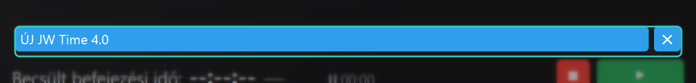
Ha az alkalmazással kapcsolatban hivatalos kommunikáció történik, a Kezdőképernyőn megjelenik egy „Hírek” mező/figyelmeztetés. Ha rákattint, megnyílik a frissítés összefoglalóját tartalmazó panel.
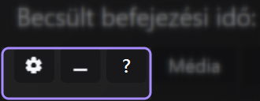
Gyorsgombok a beállítások megnyitásához, az ablak kicsinyítéséhez vagy visszaállításához, valamint a súgó eléréséhez. El vannak választva az üzemmódoktól, hogy az alsó sor tisztább legyen.
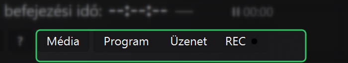
Innen átválthat a Média ablakra, a Programkezelésre, az Üzenetekre és a REC panelre. A REC melletti fekete pont a felvétel állapotát jelzi.
Ez a szakasz az alapvető időzítő kezelési műveleteket – például bejegyzések hozzáadását, szerkesztését vagy törlését – és az indítási, ugrási és visszaállítási parancsok használatát ismerteti.
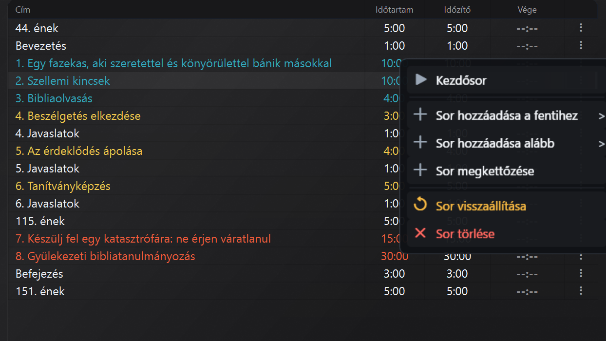
Az időzítő folyamatosan frissül: a felső visszaszámláló az aktív rész hátralévő idejét mutatja, míg a megfelelő sor kiemelve marad a táblázatban. A felső sáv színe az aktuális rész színét tükrözi.
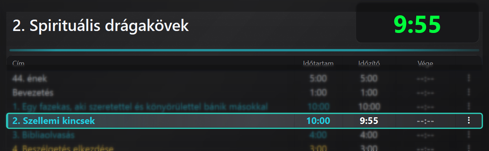
Ha módosít egy időtartamot, vagy továbblép a következő részre, a Becsült befejezési idő azonnal újraszámításra kerül. Ez lehetővé teszi az elvezetés/késleltetés deltáját és a szünetek vagy a előadóváltások felhalmozott idejét a többi panel kinyitása nélkül.
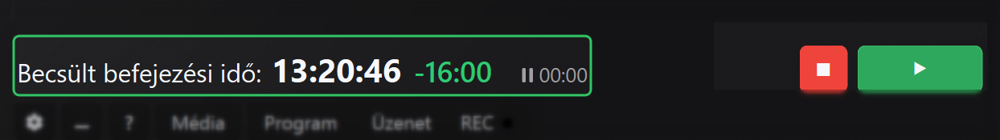
Ha az Adaptív Bibliatanulmányozás és/vagy az Adaptív Őrtorony-tanulmány engedélyezve van a Beállításokban, az alkalmazás dinamikusan módosítja a kiválasztott rész időtartamát, hogy fenntartsa az összejövetel zárási idejét. A beállítás csak az aktív opcióval rendelkező részeket érinti, és automatikusan növelheti vagy csökkentheti a perceket a felhalmozott időbeli előny/késés alapján. A képen az érintett sor el van különítve, és a beállított érték narancssárgával van kiemelve, így azonnal látható, hogy melyik időzítőt korrigálták. Manuálisan mindig beavatkozhat: az adaptív az új helyzetből kiindulva újraszámol.
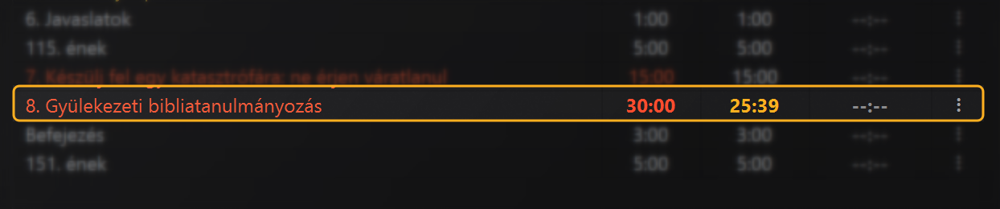
A Média ablak összegyűjti a héthez kapcsolódó tartalmakat: dalokat, videókat, képeket és hasznos hivatkozásokat a részhez. Segíthet a kezelőnek előkészíteni az összejövetelt, ellenőrizni a rendelkezésre álló tartalmat, és szükség esetén elindítani.
Megjegyzés a használathoz: a Média ablak támogatási eszközt kínál a kezelőnek a már elérhető multimédiás tartalmak előkészítéséhez, vezérléséhez és kezeléséhez. Gyakorlati felhasználása a helyi igényektől függ, és mindig a gyülekezet jelzéseivel és az előírásokkal összhangban kell történnie. Technikai igény esetén biztonsági mentési vagy mentési megoldásként is használható.
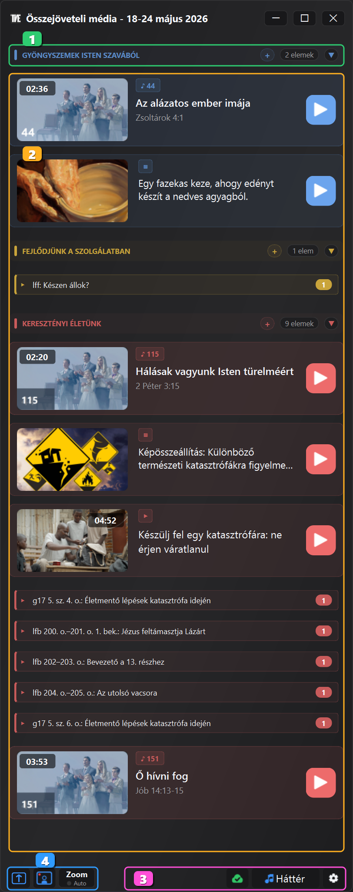
Az 1. terület azt jelzi, ha a hét hivatalos médiája még nem érhető el offline módban. Letöltheti őket most vagy elhalaszthatja. Ugyanez a viselkedés automatizálható a beállításokból 13. szakasz · Média, aktiválja a hivatalos média automatikus letöltését. Az értesítés alatt az ütemterv részeit találja, színes címmel, tételszámlálóval és gyorsparancsokkal.
Megjegyzés: A hivatalos média letöltéséhez a hálózatnak engedélyeznie kell a JW Time hozzáférést a jw.org-hoz és a médiaforrásokhoz. A programokhoz bevezetett alternatív letöltés a médiához nem érhető el. Ha az útválasztók, tűzfalak, DNS vagy tartalomszűrők blokkolják a vallási oldalakat vagy a JW Time hozzáférést, előfordulhat, hogy a hivatalos média nem tölthető le; ebben az esetben használhatja a már offline állapotban lévő médiát, vagy manuálisan adhat hozzá helyi fájlokat.
A 2. terület füleket tartalmaz előnézettel, címmel, hivatkozással és indítógombbal. A színek megegyeznek az ütemterv területeivel, így gyorsan megtalálhatja a részhez kapcsolódó énekeket, képeket, videókat és hivatkozásokat.
A helyi menüből manuálisan megjelölhet egy elemet használtként vagy nem használtként. Ha az opció Csillapítja a már használt médiát A aktív, a már használt tartalmak diszkrétebb stílussal felismerhetők maradnak. A hivatalos video-, hang- és képek kiválasztására szolgáló ablakok a módot is tartalmazzák Globális, akkor hasznos, ha az aktuális kategórián kívül kell keresni.
A 3. terület a Media ablak gyorsparancsait gyűjti össze: letöltött tartalom, előnézet, szinkronizálás, háttér és dedikált beállítások. Alul marad, hogy akkor is elérhető legyen, ha a lista hosszú.
A 4. terület a Media ablak Zoom parancsait gyűjti össze. Azok számára készültek, akik videokonferencián keresztül is megjelenítik a médiát, és a helyiség monitorán a nyilvános képernyővel dolgoznak.
A billentyűk használata előtt konfiguráljon egy globális képernyőmegosztási parancsikont a Zoom mappában, és írja be ugyanazt a kombinációt a 14. szakasz · Zoom. Ha a két parancsikon nem egyezik, a JW Time elküldi a parancsot, de a Zoom nem reagál a várt módon.
A panel Háttér A kezeli a zenét az összejövetel előtt, és ha be van állítva, az összejövetel után is, anélkül, hogy összekeverné a médiával az ütemtervben. Lejátszás közben mutatja az aktuális dalt, a következő dalt, a lejátszási előrehaladást és az időtartamot.
Elindíthatja, szüneteltetheti, ugorhat az előző vagy következő dalra, aktiválhatja a véletlenszerű lejátszást és megnyithatja a lejátszási listát. A zenei beállításokat, beleértve az automatikus viselkedést és az elhalványulást is, a panelről konfigurálhatja 13. szakasz · Média.
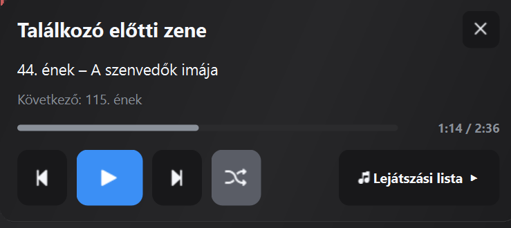
JW Time 4.0 szétválasztja a nézeteket: lo A Nyilvános képernyő a helyiség számára látható tartalomhoz használatos, miközben az A Időzítő képernyő továbbra is azoknak szól, akik követik az időket.
A Nyilvános képernyő egy külön ablakban megjeleníti a visszaszámlálást, az üdvözlő üzenetet, az évszámot, a logót és a vizuális tartalmat.
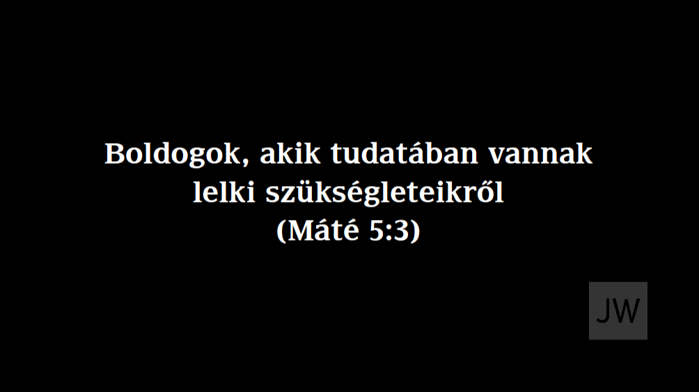
Az Időzítő képernyőn látható az óra, a folyamatban lévő rész visszaszámlálása, a előadó üzenetei és az időkezeléshez kapcsolódó állapotok. Ez a legalkalmasabb kilátás pódiumra, elnökre vagy időmunkások számára.
Az elrendezés testreszabását a cikk külön tárgyalja 5.3 szakasz · Az Időzítő képernyő testreszabása, így a képernyő napi használata külön marad a grafikus beállításoktól.

Az Időzítő képernyő a gombbal testreszabható Testreszabás a 9. szakasz · Általános.
Kiindulhat egy már rendelkezésre álló előre beállított beállításból, vagy igény szerint módosíthatja az elrendezést. A Nyilvános képernyőnek saját beállításai vannak a 12. szakasz · Képernyő; itt az Időzítő képernyő elrendezésére koncentrálunk.
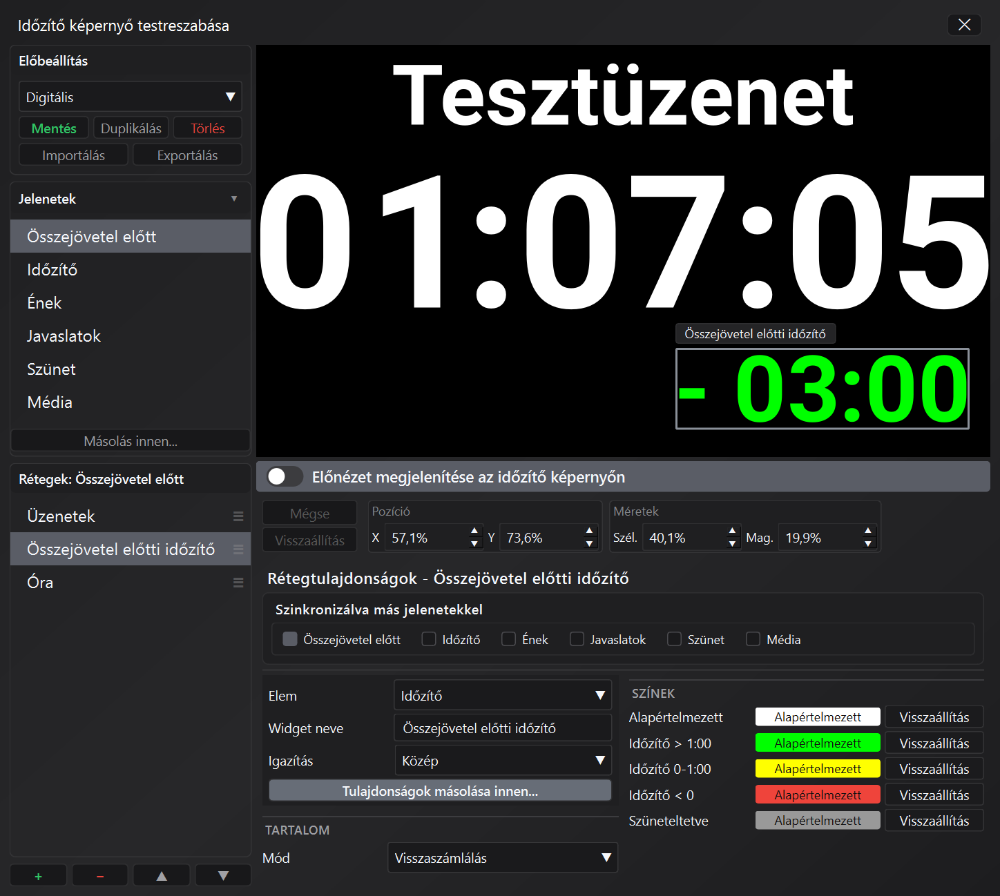
A preset egy kezdő elrendezés.
Előbeállítást választhat a 9. szakasz · Általános és használja úgy, ahogy van, vagy nyissa meg a testreszabási szerkesztőt a módosításához.
Az elrendezés jelenetekbe van rendezve.
Minden jelenet egy másik helyzetnek felel meg az Időzítő képernyőn. Ez lehetővé teszi, hogy a megtekintett rész időpontjától vagy típusától függően eltérő elrendezést jelenítsen meg.
A változtatások elvégzése előtt mindig ellenőrizze, hogy melyik jelenet van kiválasztva.
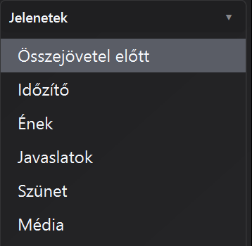
Amikor megnyomja + a Rétegek panelen a JW Time mutatja a jelenethez hozzáadható elemtípusokat. Egyes szintek valós összejöveteladatokat olvasnak, és automatikusan változnak; mások a grafikus elrendezés felépítésére szolgálnak.
Nem célszerű az egyes szintek összes tulajdonságát megjeleníteni a kézikönyvben, mert a tulajdonság panel a kiválasztott típustól függően változik. Itt megtudhatja, hogy az egyes szintek mit csinálnak, és mikor kell használni.
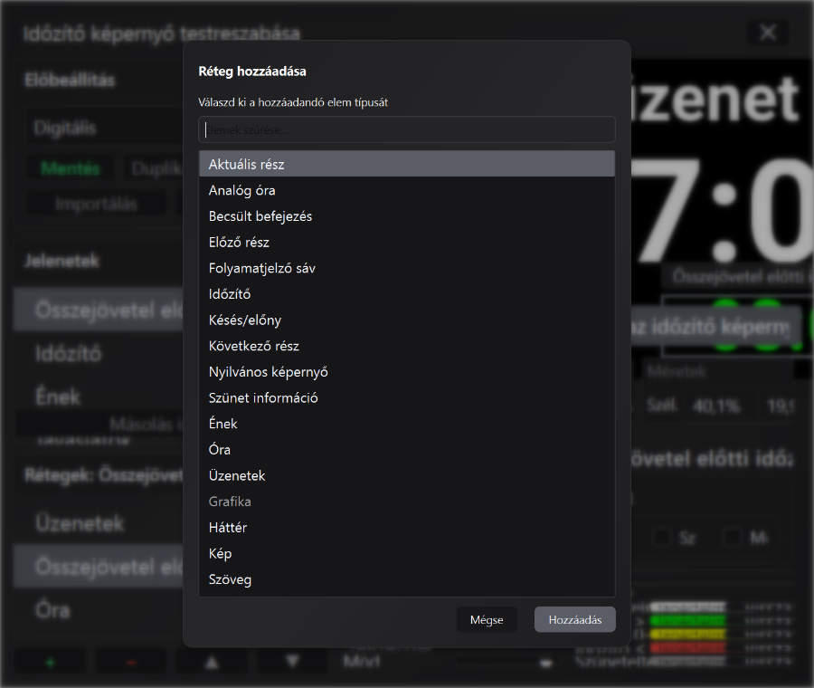
A szintek Háttér, Szöveg e Kép többször is hozzáadható. A többi szint esetében, ha már létezik azonos típusú elem, a szerkesztő felajánlja, hogy összekapcsolja egy másik jelenettel, vagy szükség esetén hozzon létre egy függetlent.
A szerkesztőben módosíthatja a kiválasztott jelenetben jelenlévő szinteket.
Minden szinten háromféleképpen módosíthatja a pozíciót és a méretet:
Az X és Y értékek szabályozzák a réteg pozícióját.
A Width és Alt értékek szabályozzák a réteg méretét.
Mindezek az értékek százalékban vannak kifejezve.
A rétegek panelen kezelheti ahalmozási sorrend: minden réteg lehet a többi felett vagy alatt, meghatározva, hogy átfedés esetén melyik jelenjen meg az előtérben. A sorrendet a listában lévő rétegek húzásával vagy a gombok használatával módosíthatja ▲ e ▼ alatta.
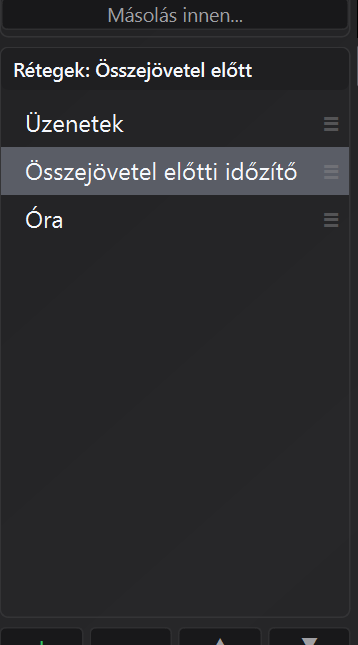
A szint kiválasztása után a következőket teheti:
Az előnézet alatt találhatók a numerikus vezérlők X, Y, Szélesség e Alt a pozíció és a méret pontos beállításához.
A változtatások után mentse el az elrendezést és alkalmazza. A szerkesztőt bármikor újra megnyithatja a frissítéshez.
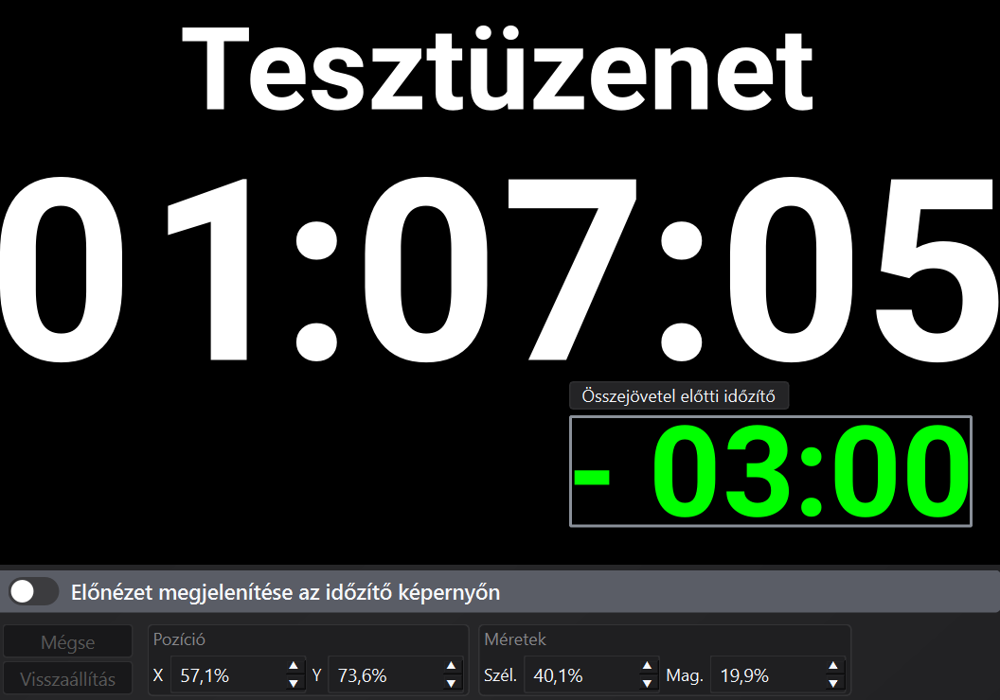
Az Üzenetek funkció lehetővé teszi, hogy diszkréten és világosan kommunikáljon az előadóval az összejövetel során, így figyelmeztetheti vagy utasításokat adhat neki anélkül, hogy megszakítaná vagy megzavarná a rész előrehaladását. Az üzenetek megjelennek az Időzítő képernyő képernyőn, így a előadó valós időben látja őket, zavaró tényezők nélkül.
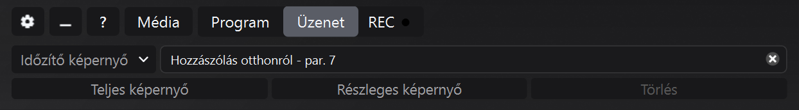
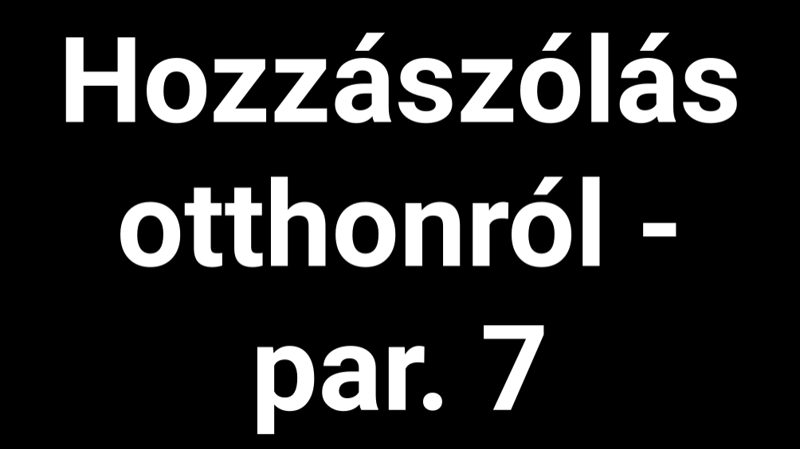
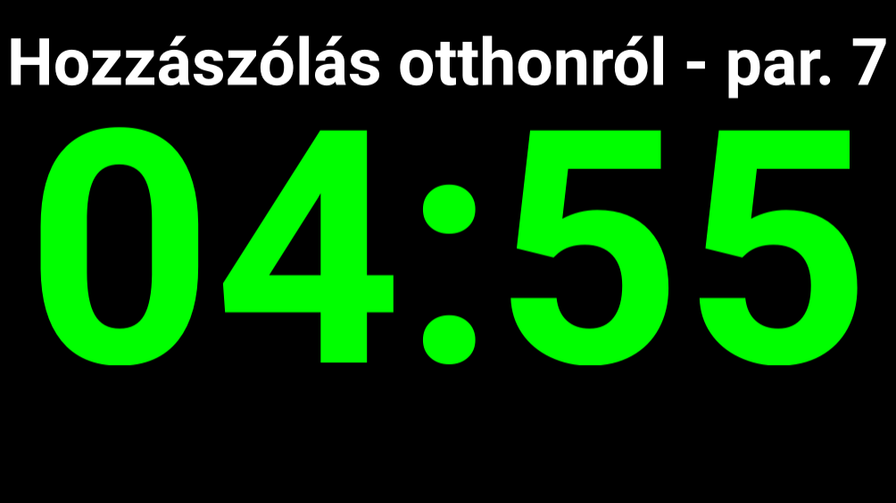
Amikor elküld egy üzenetet, automatikusan megjelenik egy átméretezhető és mozgatható előnézeti ablak, amely pontosan megmutatja, mit lát a előadó az Időzítő képernyő monitoron. Ez lehetővé teszi az üzenet és az időzítő kijelzésének valós időben történő ellenőrzését.
A kulcs A REC az alsó sávban található az Ütemezés és üzenet mellett. A szöveg melletti pont a felvétel állapotát mutatja (várakozik, aktív, szünetel vagy konvertál MP3), míg a REC panelen a JWTimeREC mappa megnyitása, a kézi felvételek kezelése, valamint a PC és a mikrofon hangszintjei figyelhetők meg.
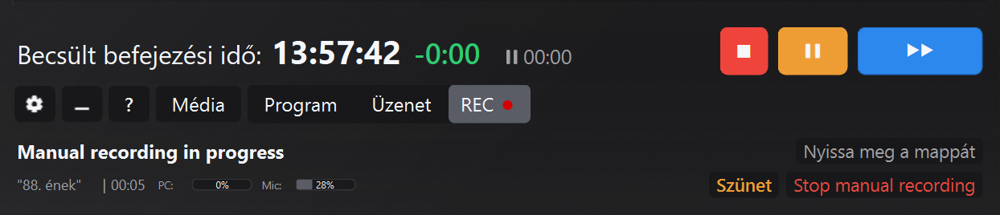
A REC panel összegyűjti a beállítások megadása nélkül használható vezérlőket:
Amikor megnyitja a REC-et, az alsó sávban megjelenik egy mindig látható panel a felvétel állapotával és hangmérővel. Itt egyetlen kattintással elindíthatja/leállíthatja a kézi felvételeket, figyelheti a PC/Mic szinteket, és megnyithatja a JWTimeREC mappát.
Ha a webszerver aktív, böngészőn keresztül megnyithatja ugyanazon a helyi hálózaton lévő másik eszközről. Ez lehetővé teszi az Időzítő képernyő megtekintését külső projektoron, táblagépen vagy számítógépen, és hasznos az elnök számára, aki követi a különböző részek időzítőit.
A webszerver, a távoli vezérlés, a távoli hivatkozás és a QR teljes konfigurációját lásd 15. szakasz · Kapcsolat és szerver.
A böngészőből a következőket teheti:
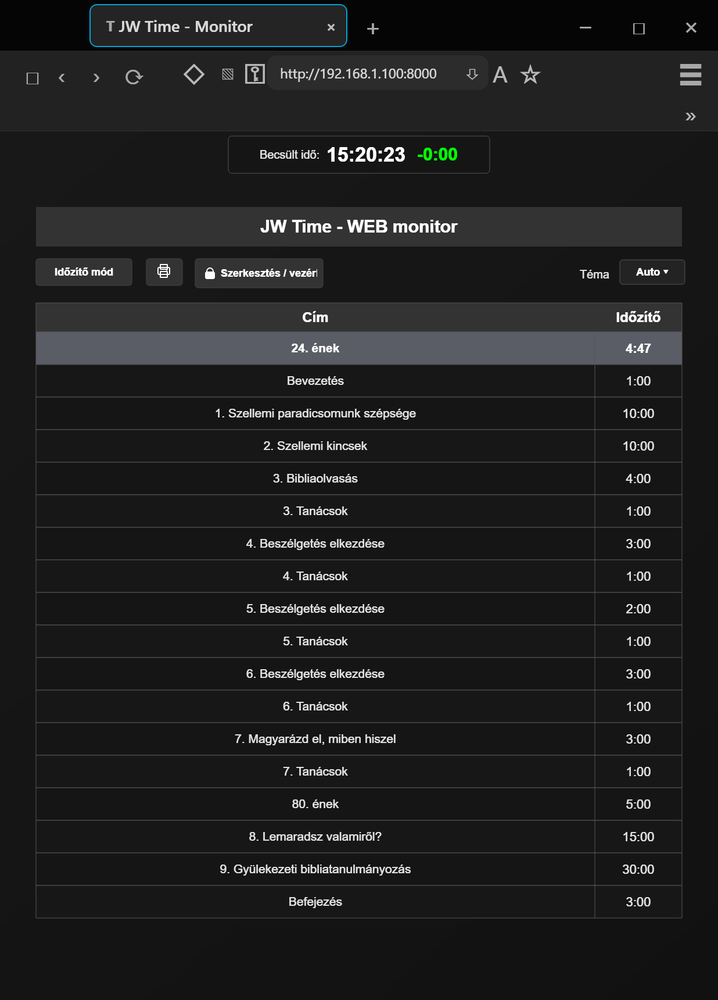
Ha a távoli vezérlés engedélyezve van, az időzítőt és a programot a böngészőből működtetheti anélkül, hogy a fő számítógép előtt lenne.
Az elérhető műveletek a konfigurált engedélyektől függenek, és a következőket foglalhatják magukban:
A webszervert megnyithatja az alkalmazásban látható cím megadásával, vagy a QR használatával, ha elérhető.
A konfigurációtól függően különböző hozzáférési szintek biztosíthatók, például csak megtekintéshez vagy vezérléshez és módosításhoz. Ha be van állítva, a hozzáféréshez PIN szükséges lehet.
A teljes konfigurációt lásd 15. szakasz · Kapcsolat és szerver.
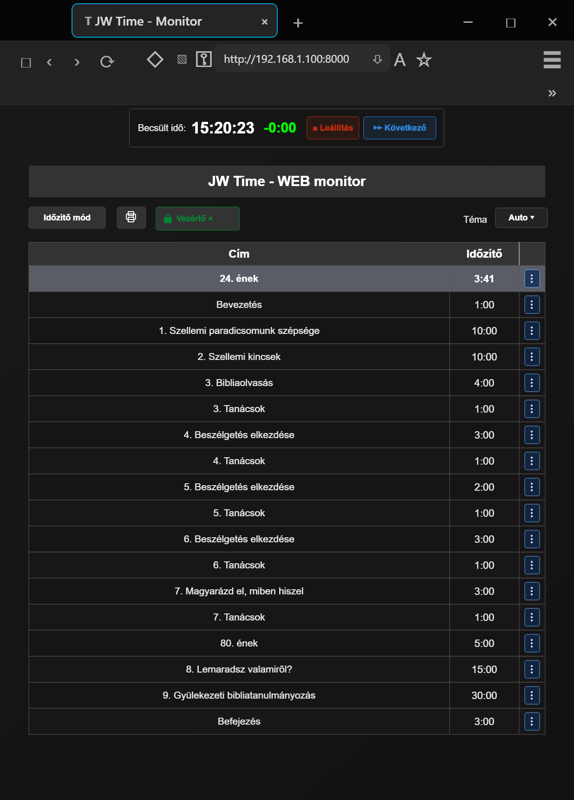
Ha az a személy, akinek a JW Time követésére vagy vezérlésére van szüksége, nincs ugyanabban a helyi hálózatban, létrehozhat egy ideiglenes távoli hivatkozást. Ez a forgatókönyv hasznos lehet videokonferenciás összejövetelekhez, távoli segítségnyújtáshoz vagy egy másik hálózathoz csatlakoztatott eszközről történő kezeléshez.
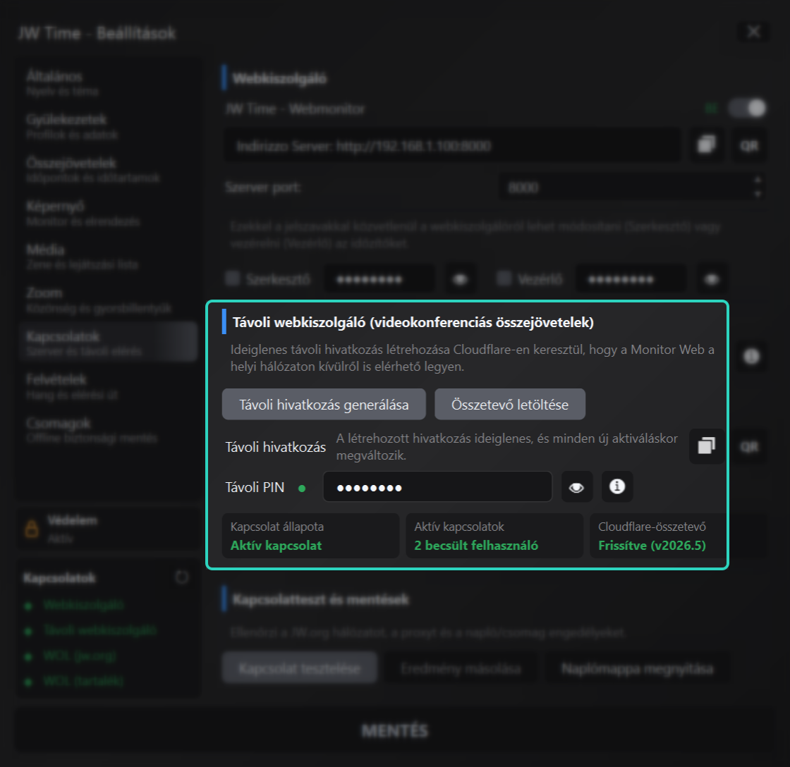
Az operatív rész a következő szakaszban konfigurálható 15.2 szakasz · Távoli webszerver. A Zoom beállításai külön maradnak: Zoom kezeli a megosztást és a parancsikonokat, míg a távoli hivatkozás a Web Monitorra vonatkozik.
Ebben a részben konfigurálhatja az alkalmazás működését: általános beállítások, gyülekezeti profilok, összejövetelek, Időzítő képernyő, média, Zoom, Web Monitor és szerver, felvételek és biztonsági mentés és visszaállítás.
A MENTÉS gomb minden változtatást alkalmaz.
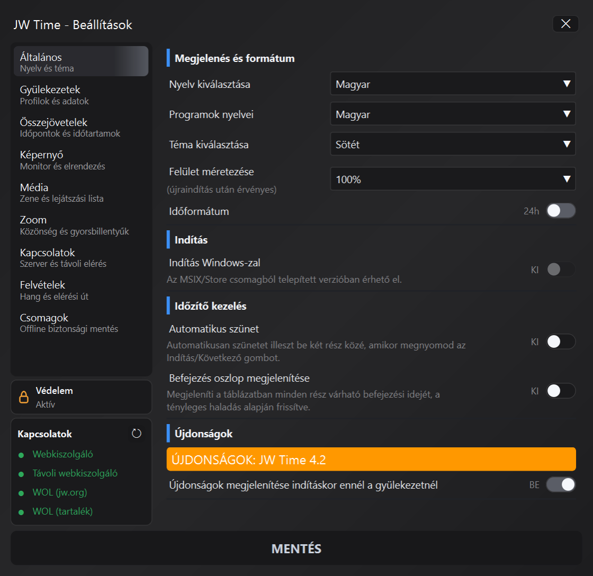
Ez a panel lehetővé teszi a gyülekezeti profilok kezelését. Minden profil fenntarthat dedikált konfigurációkat, így a JW Time képes alkalmazkodni a különböző környezetekhez anélkül, hogy minden alkalommal újra kellene konfigurálnia az ablakokat, a médiát és az elrendezést.
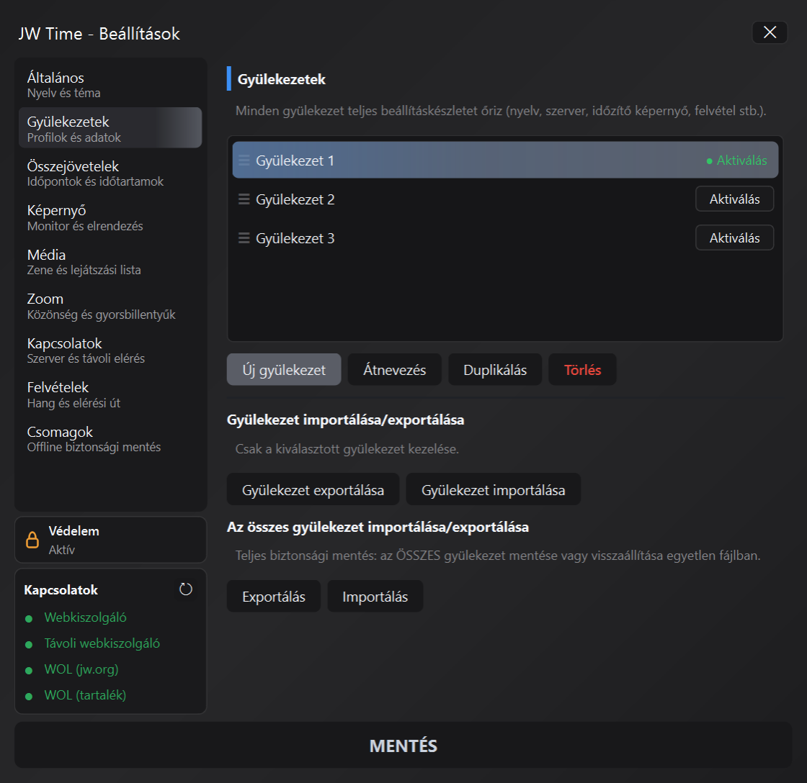
Ez a panel az összejövetel kezdetéig tartó visszaszámlálás programozására szolgál a Nyilvános képernyőn. Állítsa be a napot, az időt és az előzetes időt (percben), amellyel el szeretné kezdeni a visszaszámlálást.
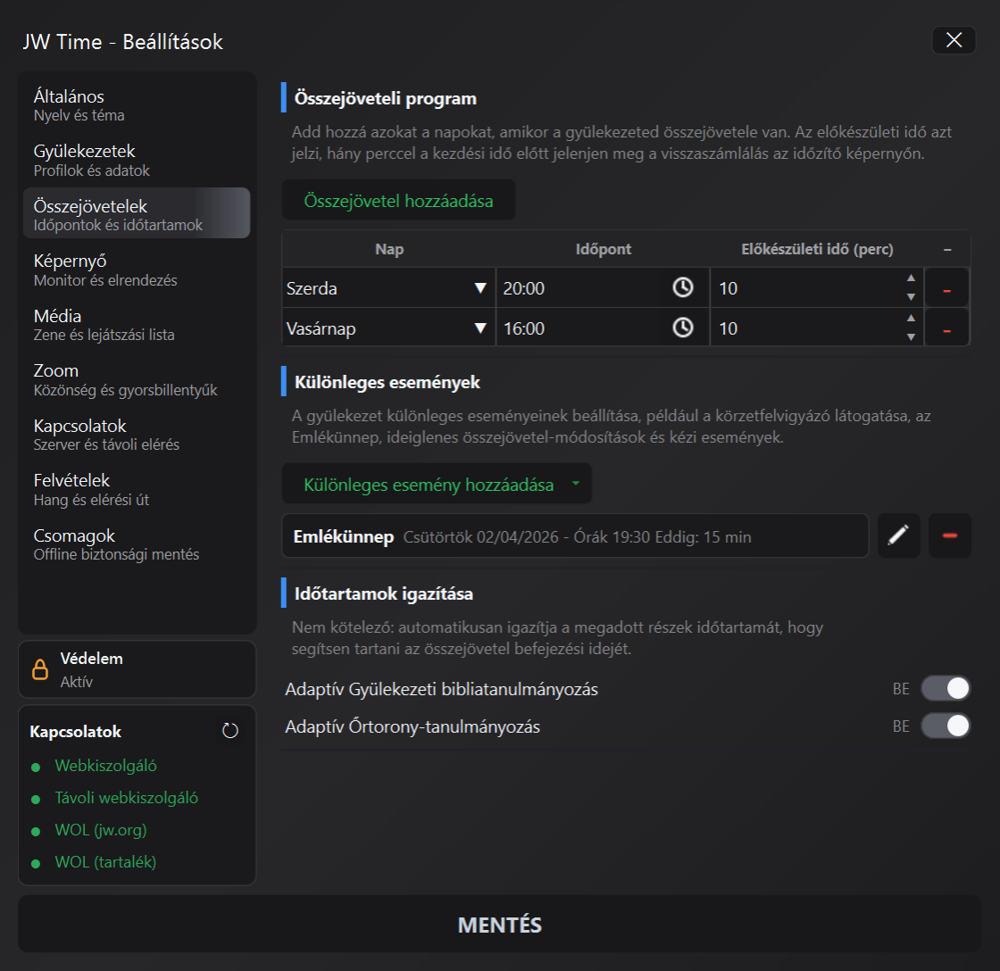
Megjegyzés: a kezdési időpontokat a nyilvános visszaszámlálás használja; a Becsült befejezési idő ehelyett a programotől és az időtartam-módosításoktól függ.
Ez a panel az Időzítő képernyő és a Nyilvános képernyő beállításait gyűjti össze. Innen kiválaszthatja, hogy hol jelenítse meg az információkat, hogyan mutassa be, és mely elemeket tegye láthatóvá az összejövetel során.
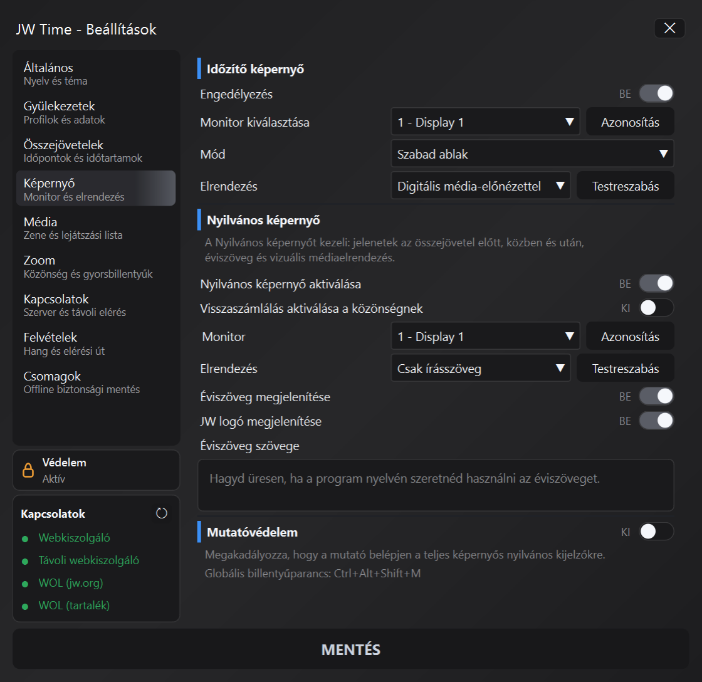
Ez a panel kezeli a Médiaablak viselkedését, a helyi gyorsítótárat és az összejövetel alatt vagy után használt tartalommal kapcsolatos beállításokat.
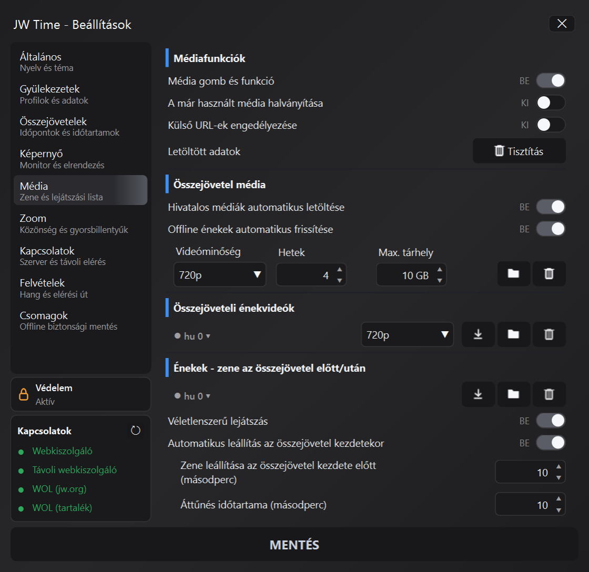
Ez a panel olyan beállításokat tartalmaz, amelyek akkor hasznosak, ha a JW Time-t a Zoom-val vagy más olyan helyiségkonfigurációval együtt használják, amelyhez külön audio/video vezérlés szükséges. Az alábbi opciók működtetik a Zoom billentyűket 4. szakasz · Médiaablak.
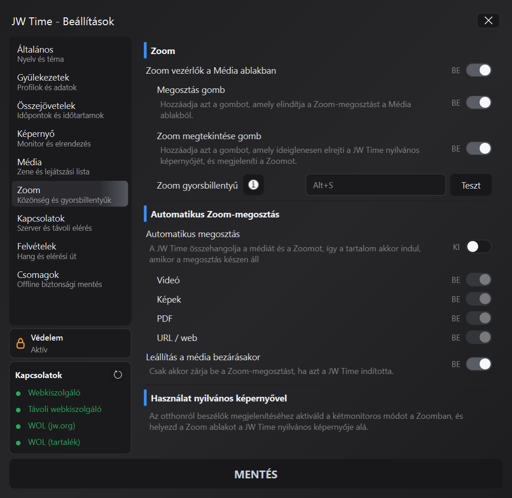
A JW Time nem választja ki a Zoom megosztásához szükséges ablakot vagy képernyőt: küldje el az ezen a panelen megadott billentyűkombinációt. Emiatt ugyanennek a parancsikonnak a Zoom beállításokban is aktívnak kell lennie, lehetőleg globális parancsikonként. Ha más kombinációt használ a Zoom-ban, a kulcs Megosztás és az üzemmód Zoom Auto nem működik megbízhatóan.
Az összejövetel előtt ellenőrizze a teljes folyamatot: készítse elő a Zoom-t a nyilvános monitoron, helyezze a előadók ablakát vagy a Zoom duplikált képernyőjét a Nyilvános képernyő alá, próbálja meg a parancsikont Teszt , majd használja a Média ablak vezérlőit.
Ha valakinek a hálózaton kívülről kell megtekintenie vagy vezérelnie a JW Time-ot egy videokonferenciás összejövetel során, azt nem a Zoomban kell beállítani: ehhez a 8.3 szakasz · Távoli hozzáférés a videokonferenciás összejövetelekhez részt kell használni. Ezen a panelen csak a parancsikonok, a Zoom ablak megosztása és kezelése maradnak.
Ez a panel kezeli az alkalmazás csatlakozását: a Web Monitor és a webszerver a böngésző megtekintésére és vezérlésére, a QR a gyors eléréshez, a távvezérléshez, a fejlett kapcsolattesztekhez és a naplókezeléshez.
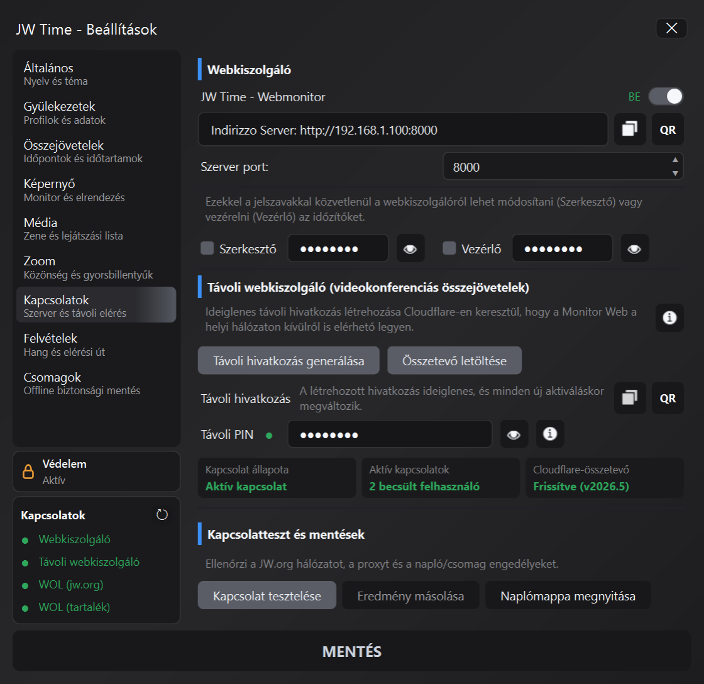
http://192.168.1.100:8000.Ha a webszerver aktív, a JW Time egy másik eszközről is megnyitható ugyanabban a helyi hálózatban böngészőn keresztül, hogy a Web Monitort telefonról, táblagépről vagy másik számítógépről használja.
Ez a rész arra szolgál, hogy a Web Monitort a helyi hálózaton kívül is elérhetővé tegye, például videokonferenciás összejövetelek során. A felhasználás kontextusát lásd 8.3 szakasz · Távoli hozzáférés a videokonferenciás összejövetelekhez; itt találja a gyakorlati kezelőszerveket.
Ha a funkció engedélyezve van, a webszerver nem csak megtekintésre, hanem időzítő és programműveletek távoli végrehajtására is használható. Ha a Vezérlő szerepkör engedélyezve van, a webképernyőn a rendelkezésre álló értékek, például az rész időtartama beállítására szolgáló vezérlők is megjelennek.
Ezek közül elérhetők lehetnek:
A konfigurációtól függően különböző hozzáférési szintek állnak rendelkezésre, hogy megkülönböztessük az egyszerű megtekintést a vezérlési vagy módosítási funkcióktól.
Értekezletek hangrögzítési funkciója, amely a beállítások "Felvételek" füléről és a főablak REC gombjáról érhető el.
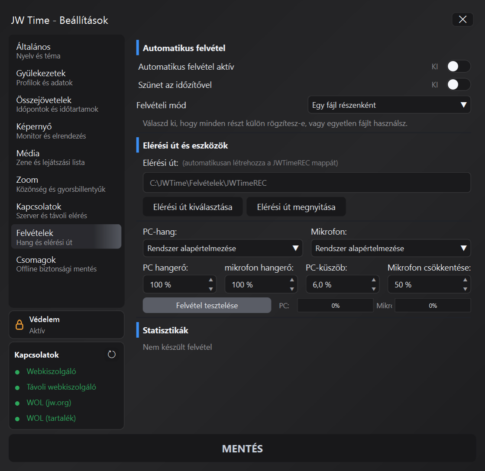
Ez a panel heti programokat készít offline használatra, és lehetővé teszi a mentett csomagok exportálását vagy importálását.
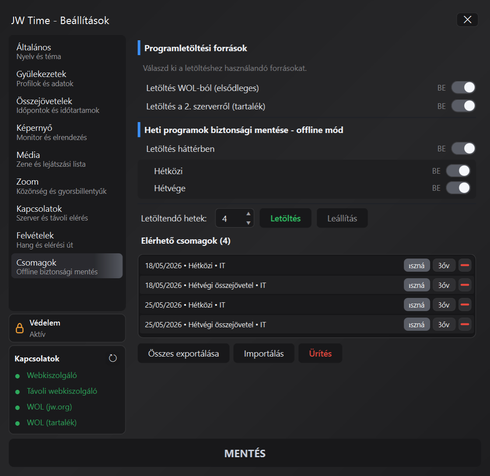